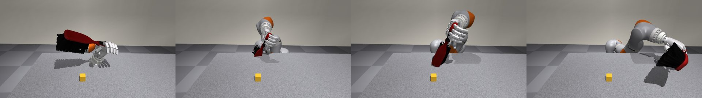
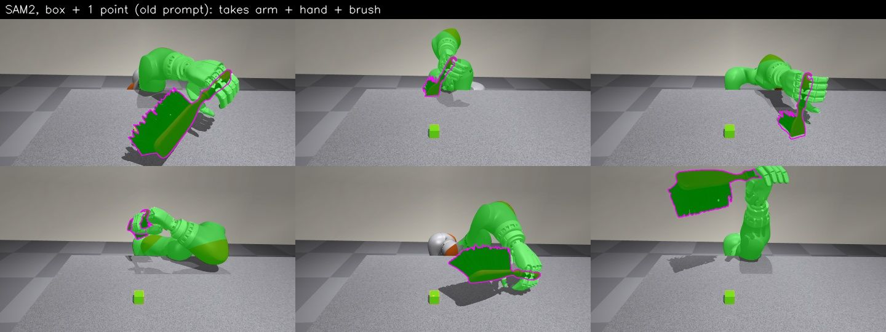
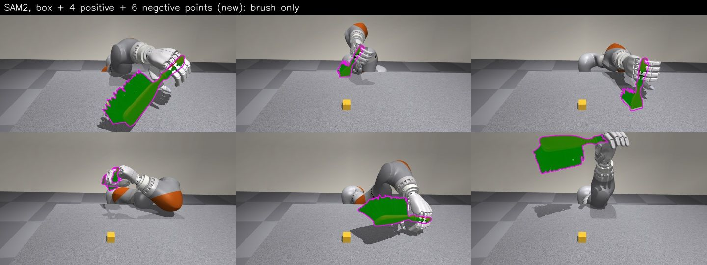
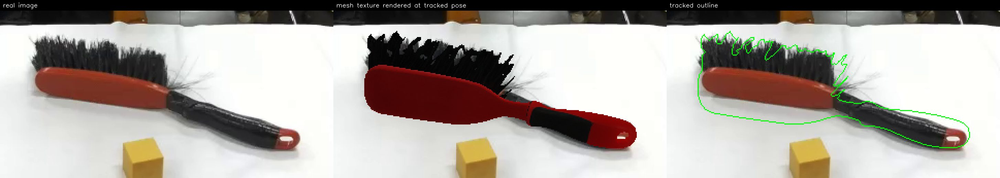
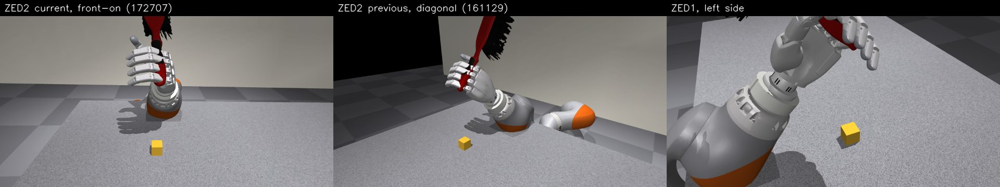

What we tried for keeping the red brush tracked while the Sharpa hand holds it, how it was tested (MuJoCo + real takes), what works, what does not, and what to run next.
In sim (8 held-brush takes, frames skipped like the live camera), v4 with the new SAM2 prompt keeps 56–60% of frames within 2 cm, against 27% for old FoundationPose and 30% for yesterday's v4, and it recovers in 5 of 8 takes (old FoundationPose: 1 of 8). It uses no colour thresholds, so nothing in it depends on sim calibration. The verified speed edits halve track_one (31 → 15 ms per object) with bitwise-identical poses and are already in the repo.
cd /home/tylerlum/github_repos/depthbasedRL
python third_party/FoundationPose/live_tracking_robust_2_objects.py <your usual flags> \
--sam2_tool --sam2_image_size 640 --sam2_async --sam2_every 2 \
--lost_metric cover --lost_try_anchor --log_checks --save_depthv8 is best in sim, but its colour check compares the image with the mesh texture. On real takes a correctly tracked brush scores 0.28–0.31 (sim 0.07) and a pose stuck on the orange KUKA link scores the same. Its thresholds would fire on good frames and miss the KUKA failure. A colour model learned from the real first frame separates them much better (see Colour check); it is logged by --log_checks so we can calibrate it on your next rollouts.
--save_depth are the next evidence.| Ask | Status | Result / where |
|---|---|---|
| Does the FoundationPose++ idea work, is it fast, better than baseline? | done, tested | Built a MuJoCo bench. FP++'s per-frame tricks hurt; what helps is SAM2 as a watchdog + a fixed SAM2 prompt (+ the colour referee in sim). See Tracker results. |
| Test the full ROS pipeline with a fake robot, objects, physics and rendering in MuJoCo; compare with old FoundationPose | done, tested | Private roscore, all 7 topics every frame, scored in the robot frame. Old FP vs v4 vs v8 on 8 takes. |
| "v4 barely helps": does it help or not? | done, tested | Yesterday's v4: 30% of frames within 2 cm vs 27% for old FP. With the new SAM2 prompt: 56–60%. |
| SAM3 vs SAM2: speed and tracking quality | done, tested | SAM3 tracker 80 ms vs SAM2 13 ms; with the same prompt, same quality. Details. |
| Side-by-side RGB + mask videos for SAM2 / SAM3 | done, tested | Real takes 164617, 173827 and two sim takes, on this page and in /juno/u/tylerlum/kuan_handoff_20261119/sam2_vs_sam3_videos/. |
| Is the box prompt only at the start? Does it matter later? | answered | Only at (re)starts, but it defines the object for all later frames: mask IoU 0.25 → 0.85 from the prompt alone. Fixed (new default). |
| Did we already have a Kalman filter on orientation? Tune it? | done, tested | Yes (constant velocity on translation + rotation vector). Better start pose offline, no gain in the full tracker. Keep off. |
| Are we basically doing FoundationPose++? | answered | No: FoundationPose tracks unchanged; SAM2 watches; re-register only when a referee says it is wrong; 180° flip test. |
| Best camera pose: current front-on vs previous diagonal | done, tested | Front-on is best in sim (71% vs 53–57%). Cameras. |
| Two cameras (ZED1 + ZED2 front or diagonal): gains, compute | partly | Sim gains small (ZED1 +0.6%; diagonal ZED2 +4%, upper bound +11%). Compute cost estimated (2× depth + tracking), not measured live. |
| Object origin is not at the object centre | answered | FoundationPose tracks about the mesh centre internally and converts back; our checks compare like with like. No change needed. |
| Is the colour check suspicious? | done, tested | Yes: unsafe on real takes (good poses 0.28–0.31, KUKA-link failure scores the same). Learned-appearance check is better and now logged. |
| Re-registration is slow; what if the robot keeps moving? | partly | Measured 0.57–0.98 s; tracking restarts from a stale pose. Fixes listed (worker thread, scorer TensorRT, catch-up track); not built yet. |
| Inference time of the colour and other checks | done, tested | Colour 2 ms, silhouette 1.5 ms, depth fit 4 ms, flip check ~10–15 ms every 3rd frame. |
| In-hand reorientation: no fixed grasp offset | partly | Agreed. Proposed a soft hand-distance check from joint states (brush must stay near the palm); not built. |
| How fast is SAM3 text re-detection; when does SAM lose the object? | done, tested | 271 ms. SAM rarely loses the brush (IoU < 0.5 on 2/358 and 7/248 frames with the new prompt); its failure is spreading onto the hand after a bad prompt. |
| Tune colour thresholds from logged results | partly | Done on existing real takes without depth (appearance check separates table vs KUKA failure). Needs your next --save_depth rollouts + good/bad labels. |
| Logging so you can replay real rollouts as live or in order (local only) | done, tested | --save_depth --log_checks + compare_replay_configs.sh (RT=0 / RT=0.5). Tested end to end through ROS in sim; not yet on a real camera recording. |
| SAM3 at 640 px, GPU preprocessing, torch.compile, TensorRT | partly | Profiled (78 ms is compute-bound). 672 px is possible via config change (est. 22–35 ms), not tried; still slower than SAM2. |
| Look through FoundationPose / SAM2 / SAM3 code for speed-ups | done, tested | Review done. 4 safe FoundationPose edits: bitwise-identical poses, track_one 31 → 15 ms per object. Now in the repo. Bigger items listed. |
| New 2026-11-19 branches, pushed so Kuan can see | done, tested | tylerlum/FoundationPose 2026-11-19_TrackerSimBenchSamPrompt_bohg-ws-16. depthbasedRL has no remote. |
| Where to share (depthbasedRL remote? simtoolreal_dev?) | answered | Use the FoundationPose fork. I can create a private GitHub repo for depthbasedRL if you say so. |
| "gh auth login" in the status bar | answered | Claude Code's PR-status footer; unrelated. gh says you are logged in; ! gh auth refresh should clear it. |
MuJoCo scene of the sweep cell: iiwa14 + Sharpa hand holding the red brush (kinematic grasp, curled fingers), 29 mm gold cube under physics, table at the measured 0.540 m, rendered from the calibrated camera with its real intrinsics at 960×540. Depth is the live tracker's own Fast-FS TensorRT engine run on a rendered stereo pair (12 cm baseline), so it blurs thin parts like the real one. Brush speeds are capped at the real p95 (0.9 m/s, 350°/s). The unchanged tracker replays each take; --replay_realtime_scale 0.5 skips frames like the live camera would (the replay runs ~2× slower than live because the live tracker shares the GPU). Every true frame is scored with the newest pose the tracker had published, which is what the policy sees.

"Frames within 2 cm" uses ADD (mean distance of mesh points). "Lost" is ADD > 5 cm. "Recovered" means the last half second is within 2 cm.
Identical configs vary run to run (SAM2 runs asynchronously and timing changes which frames are skipped). Compare averages over takes and repeats, not single cells.
The prompt is given only when SAM is (re)started: at registration and whenever the tracker re-seeds it. SAM then tracks from its memory of that first mask, so the prompt decides what "the object" is for every later frame. With the old prompt (mask box + 1 point) on a held brush, the box also covers the hand, and both SAM2 and SAM3 track arm + hand + brush. Your tests looked perfect because the first prompt was given with the brush on the table.
| Tracker · prompt | ms / frame | Mask IoU with true visible brush (median, 2 hard takes) |
|---|---|---|
| SAM2 at 640 px · box + 1 point (old) | 13 | 0.25–0.38 |
| SAM2 at 640 px · box + 4 positive + 6 negative points (new default) | 13 | 0.82–0.91 |
| SAM3 tracker · box + 1 point | 80 | 0.25–0.38 |
| SAM3 tracker · mask prompt | 80 | 0.88–0.95 |
| SAM3 text detection ("red brush"), one frame | 271 | for re-acquiring after a loss |


Why SAM3 is slow, and is it worth optimizing? Its image encoder is a 32-layer ViT at 1008 px (466 M parameters, ~6.6 TFLOP per frame); 78 ms is already near the GPU's limit, and preprocessing is only 1.4 ms. torch.compile or TensorRT might reach 55–65 ms. Running it at 672 px is possible by changing config.image_size (estimated 22–35 ms) but unverified for accuracy on thin parts. Even then it stays ≥2× slower than SAM2 for a small mask gain. Use SAM3 for text re-detection after a confirmed loss; keep SAM2 for tracking.
v7/v8 render the textured mesh at the tracked pose and compare it with the image. In sim this separates right from wrong poses well (right ≈ 0.07, more than 5 cm off 0.23–0.41) because the sim brush is the mesh texture. On real takes it does not:

The alternative learns the brush's colours from the real first frames (hue × saturation histogram plus a dark bin) and measures how far the pixels under the tracked pose drift from it. On the table it stays 0.00–0.15, and the brush stuck on the KUKA link reads 0.55–0.79. Correctly held frames read 0.26–0.36 in this test only because these takes have no saved depth, so the fingers covering the brush could not be excluded. --log_checks logs it occlusion-aware, so your next --save_depth rollouts give the real thresholds.

Keep the current front-on ZED2. With v8 it keeps 71% of frames within 2 cm, against 53–57% from the previous diagonal pose and 25–27% from ZED1. All three see the brush less than 60% visible about equally often (14–15% of frames); the diagonal view sees it smaller (8.6k vs 11.8k pixels), and from ZED1 the held brush often leaves the top of the image. ZED1's pose is the 16 Oct calibration; if that camera has moved, its result does not apply.
Each camera runs its own tracker on the same motion; per frame we take one camera's pose in the robot frame. "Colour selector" picks the camera with the lower logged colour error (sim-optimistic, see above); "oracle" always picks the better one and is the upper bound.
Adding ZED1 gives almost nothing (71.5% vs 70.9%). A second ZED2 at the diagonal pose helps more (74.8% with the selector, 82.3% upper bound), but it doubles depth and tracking work on the one GPU, and its selector uses the sim-only colour check. With the speed edits there may be room for it later; it is not the first thing to do.
We have a constant-velocity filter (--fpp_filter) on translation and rotation vector. It only changes the pose FoundationPose starts refining from; the published pose stays FoundationPose's. It now runs every frame, with --fpp_filter_alpha, --fpp_filter_max_v, --fpp_filter_max_w.
| Test | No filter | Filter |
|---|---|---|
| Offline, true trajectories + FoundationPose-like jitter, 30 Hz: start-pose error p95 | 26.7 mm · 7.7° | 11.7 mm · 4.1° (alpha 0.5) |
| Offline, 15 Hz (skipped frames): p95 | 51.7 mm · 14.7° | 25.8 mm · 6.8° (alpha 0.8) |
| Closed loop, full tracker v8 + new prompt, 8 takes × 2: frames within 2 cm | 71.0% · 70.5% | 71.5% · 64.6% |
The better start pose does not carry through: the refiner already absorbs most of that error, and when the pose is wrong the filter extrapolates the wrong motion (one repeat collapsed on occlusion_tour). Keep it off. Tuning more would need many repeats to beat the run-to-run noise.
| Step | Time | Note |
|---|---|---|
| Fast-FS depth (TensorRT) | ~4 ms | already optimized |
FoundationPose track_one, per object | 15–40 ms | only ~3–4 ms is GPU work; the rest is host overhead (≈30 syncs, CPU uint8→float, empty_cache) |
| SAM2 at 640 px | 13 ms | async thread, every 2nd frame |
| Colour check / silhouette / depth fit | 2 / 1.5 / 4 ms | not the bottleneck |
| Re-registration (252 hypotheses) | 0.57 s (2 iters) · 0.98 s (5) | blocks the loop; scorer is still PyTorch |
Verified today: the four safe edits (no per-call empty_cache, uint8 upload with GPU conversion, pose_last kept on the GPU, lazy logging in register) give bitwise-identical poses for both objects on two takes (289 and 358 frames), and cut track_one from 31.2 to 15.4 ms (brush) and 30.1 to 15.1 ms (cube); the replay loop went from 70.8 to 40.3 ms per frame (3 alternating runs each, GPU shared with the live tracker in both). They are now in depthbasedRL and on the fork branch.
| Change | Expected saving | Risk |
|---|---|---|
Drop per-call torch.cuda.empty_cache() (refiner, scorer) | 1–5 ms/frame | none · done in speedopt copy |
Upload rgb once as uint8, convert on GPU; keep pose_last on GPU | 3–5 ms/frame | none · done in speedopt copy |
Lazy logging in register (f-strings format 252-value GPU tensors) | a few ms / register | none · done in speedopt copy |
Cache K / crop constants, cut ~20 of ~30 syncs per track_one | 1–3 ms/object | none |
| Refiner TensorRT plan with opt batch 252 for register | 10–40% of register refine | low |
| Scorer in TensorRT fp16 | 40–60 ms / register | low–medium (near-tied scores) |
| Re-register in a worker thread / own stream | removes the 0.6–1 s stall | medium |
| Both objects in one refiner call (batch 2) | 4–10 ms/frame (guess) | low |
Also found: the TensorRT refiner copies inputs on torch's stream but runs on its own stream without an event; safe today only because of default-stream semantics. Worth fixing with the stream change.
Nothing here uploads anywhere. Each take lands in /home/tylerlum/kuan_takes/<take>/.
--save_depth --log_checks: writes replay/ (rgb, depth, capture stamps, K, first-frame masks) and per-frame checks in robust_log.json.cd /home/tylerlum/github_repos/depthbasedRL
CONFIGS="plain recommended v8" RT=0 bash third_party/FoundationPose/tools_sweep_20261118/compare_replay_configs.sh <take>
CONFIGS="plain recommended v8" RT=0.5 bash third_party/FoundationPose/tools_sweep_20261118/compare_replay_configs.sh <take>overlay.mp4); that labels the logged checks for threshold tuning.Tested end to end on a sim take through the full ROS path (private roscore, recommended config + --log_checks --save_depth): all 7 topics every frame (brush 6.4 mm median error in the robot frame, cube 2.6 mm, payload valid 259/259); replay/ written (258 frames); 129 frames of logged checks; then compare_replay_configs.sh re-ran plain / recommended / v8 on that saved take. Without ground truth its warning signs already separate them: plain put the brush below the table on 98 frames, recommended and v8 on none. Against the sim truth: plain 26% of frames within 2 cm, recommended 66%, v8 89%. Not yet run on a real camera recording, because the live tracker owns the camera.
| Repo | Branch | Shared? |
|---|---|---|
| tylerlum/FoundationPose (fork) | 2026-11-19_TrackerSimBenchSamPrompt_bohg-ws-16 | pushed; give Kuan this |
| depthbasedRL (local only, no git remote) | 2026-11-19_TrackerSimBenchSamPrompt | bohg-ws-16 only |
| Speed edits (scratch copy, not committed) | /home/tylerlum/github_repos/FoundationPose_speedopt_20261119 | to be ported after review |
Sim bench: third_party/FoundationPose/tools_sweep_20261118/sim_mujoco/ (README inside). Videos for Kuan: /juno/u/tylerlum/kuan_handoff_20261119/sam2_vs_sam3_videos/.
--save_depth --log_checks, and tell me roughly when tracking was good or bad. I replay all configs on them in order and live-like, and calibrate the learned-appearance thresholds.